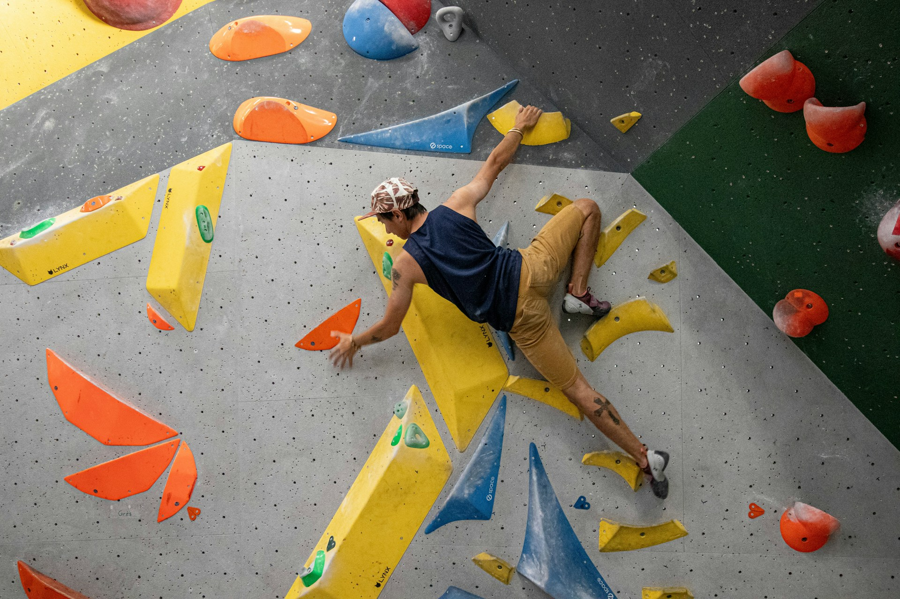
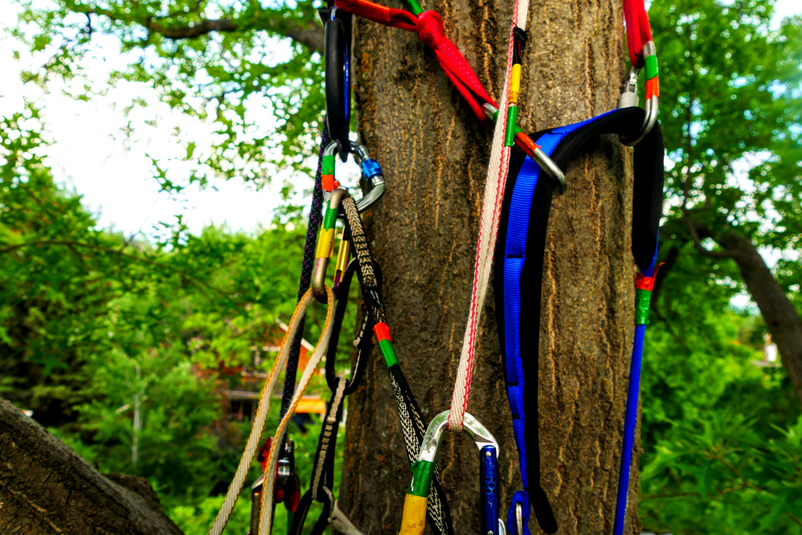
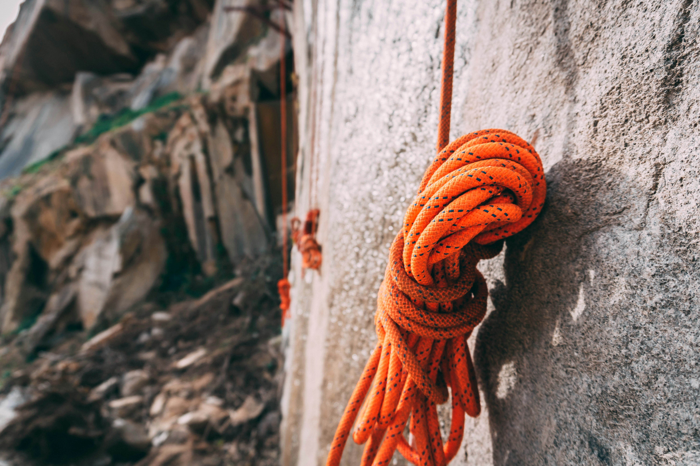
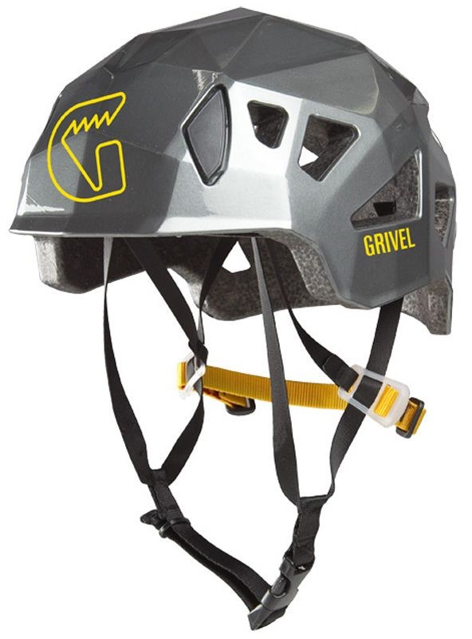
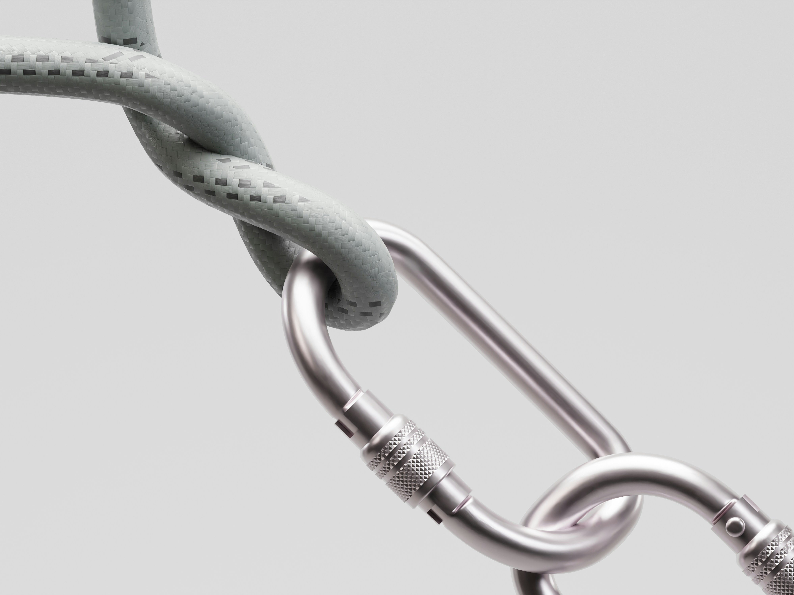
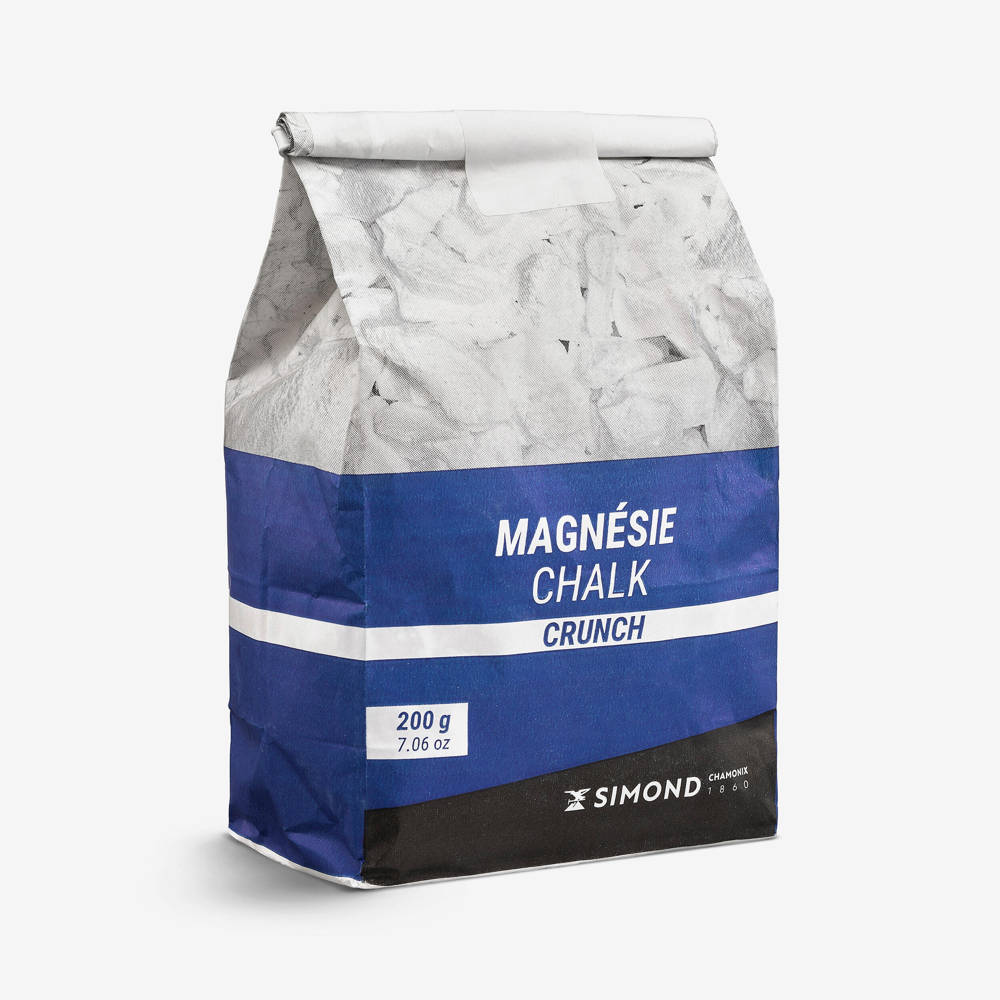
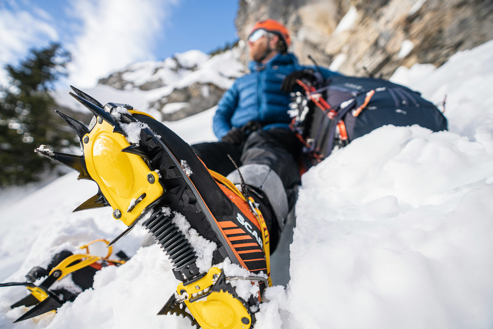
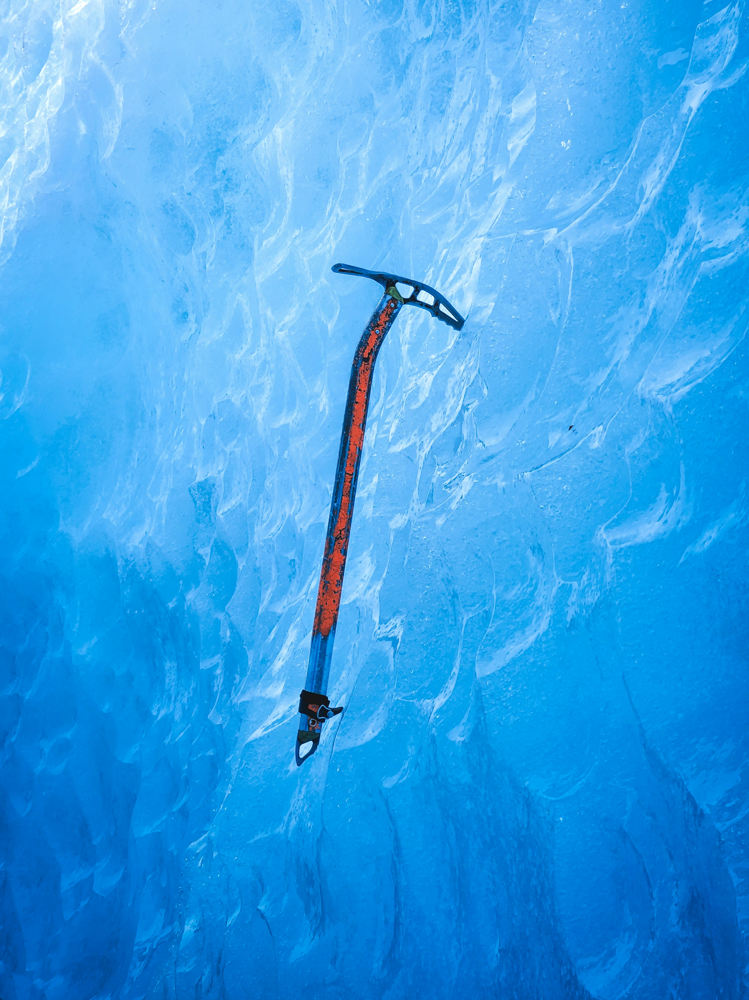
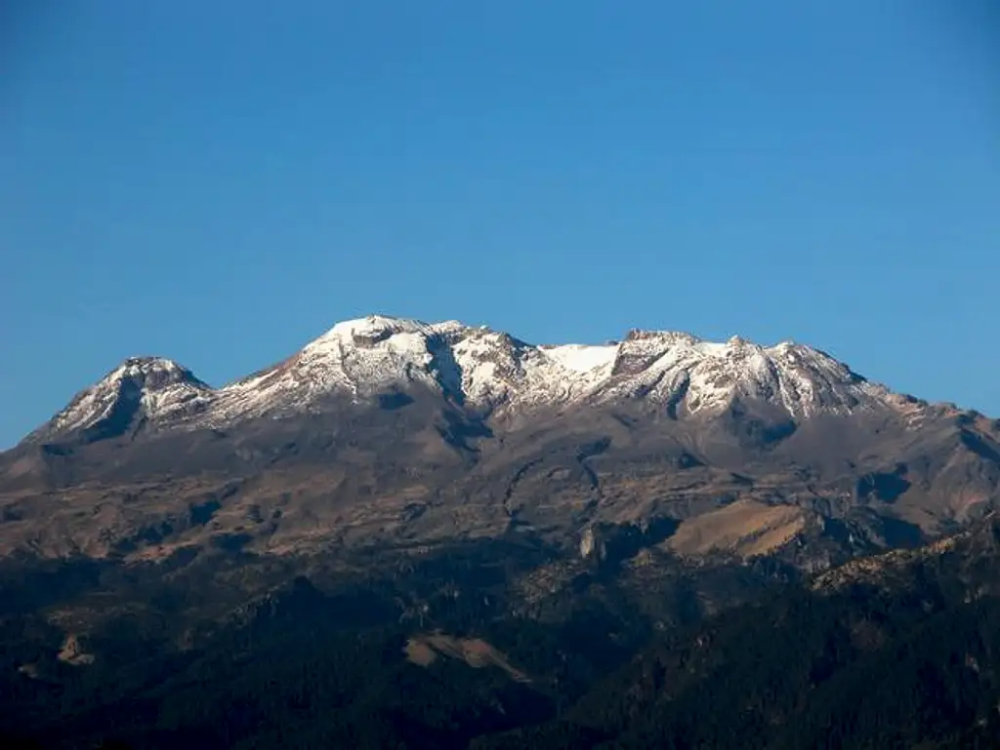

Descubre las montañas de México
Desde principiante a experto
En esta pequeña pagina encontraras una guia hacerca de la escalada y el como puedes empezar si estas perdido pero te interesa este hermoso deporte veremos todo lo que necesitas para empezar aun si no tienes nada de experiencia te diremos que es lo que tienes que hacer y si ya eres un escalador experimentado te puede interesar una de las cumbres mas dificiles de mexico.
En mexico hay una amplia diversidad de montañas que se pueden escalar casi todo el año y estan distribuidas a lo largo de todo mexico es una mina de oro para escaladores ya sea veteranos o principiantes, podemos encontrar montañas para hacer senderismo y apenas ocupas escalar pero tambien montañas donde incluso puedes practicar la esclada de hielo.
Tipos de escalada
Es impotante el identificar los principales tipos de escalada que hay ya que si no tienes experiencia te va a ser mas facil y es mas eficiente que comiences con un tipo de escalada en concreto aqui los vamos a enumerar de cual es el mas facil al mas dificil de acuerdo a opiniones por expertos

Boulder
Escalada de bloques o paredes de poca altura, sin utilizar cuerda este tipo de escalada se centra mucho en movimientos cortos y técnicos.
Es una de las formas más accesibles para comenzar ya que se realiza a poca altura y sin cuerda ni arnés, normalmente sobre colchonetas esta permite aprender movimientos, equilibrio y técnica básica.

Escalada deportiva
Se ascienden rutas de roca que cuentan con puntos de protección permanentes instalados en la pared.
Es una progresión natural después de aprender los movimientos básicos, las rutas tienen anclajes permanentes, por lo que el escalador se concentra principalmente en la técnica y el recorrido, hay rutas desde niveles para principiantes hasta niveles muy avanzados.

Escalada tradicinal
El escalador coloca sus propias protecciones durante el ascenso en lugar de depender de anclajes permanentes.
Aquí aumenta considerablemente la dificultad técnica porque el escalador debe colocar protecciones durante el recorrido, se requiere conocimientos adicionales de equipo, planificación y manejo de la ruta.

Escalada artificial
El escalador utiliza equipo colocado en la pared como ayuda directa para progresar, en lugar de depender únicamente de sus manos y pies sobre la roca.
Utiliza sistemas y elementos de protección como ayuda para progresar por paredes que pueden resultar muy difíciles de escalar utilizando únicamente las manos y los pies. No suele ser una modalidad de iniciación.

Escalada en hielo
Consiste en ascender formaciones de hielo, utilizando técnicas y equipo específicos para ese terreno.
Se realiza sobre hielo y requiere técnicas y equipo especializados. Incluso alguien con experiencia en roca necesita aprender técnicas específicas antes de practicarla.

Escalada alpina
Combina escalada con montañismo en ambientes de montaña. Puede incluir roca, nieve y hielo.
Es probablemente la modalidad más compleja de esta lista para plantearla como etapa de progresión. Puede combinar roca, nieve y hielo, además de navegación y condiciones cambiantes de montaña. Requiere una combinación amplia de habilidades.
Nota: estas son los pincipales y mas comunes tipos de escalada sin embargo hay varientes de estas mismas y otros tipos de escalada que son poco conocidos.
Equipo básico
El equipo necesario depende del tipo de escalada y del lugar donde se practique. Sin embargo, existen algunos elementos básicos que aparecen con frecuencia en diferentes modalidades.

Arnés
Se coloca alrededor de la cintura y las piernas del escalador. Permite conectarlo de forma segura a la cuerda mediante el sistema de aseguramiento.

Cuerda
Se utiliza para proteger al escalador durante el ascenso y reducir el riesgo de lesiones en caso de una caída.

Casco
Protege la cabeza del escalador frente a golpes y posibles objetos que puedan caer desde la pared o montaña.

Pies de gato
Son zapatos especializados para escalar. Su diseño permite mejorar la precisión, el equilibrio y el agarre sobre la roca.

Mosquetones
Son conectores metálicos que permiten unir la cuerda con diferentes elementos del sistema de protección.

Dispositivo de aseguramiento
Permite controlar la cuerda durante el aseguramiento y ayudar a detener una caída de manera controlada.

Magnesio
Ayuda a mantener las manos secas y mejora el agarre del escalador sobre las presas y la roca.

Crash Pad
Es una colchoneta utilizada principalmente en boulder para amortiguar las caídas cuando se escala sin cuerda.

Crampones
Se colocan en las botas para proporcionar agarre sobre superficies de hielo y nieve, especialmente en escalada de hielo y alpinismo.

Piolets
Son herramientas utilizadas para obtener apoyo y progresar sobre hielo y nieve durante actividades de alta montaña.

Protecciones móviles
Son dispositivos utilizados principalmente en escalada tradicional para crear puntos de protección en grietas de la roca.
Picos de México
Una vez que ya tienes la teoria de los distintos tipos de escalada y sabes en que nivel estas estos son los picos que a nuestra consideracion tienes que escalar ya sea si eres un escalador experimentado o no ya que no solo tomamos en cuenta la dificultad de la montaña sino tambien la belleza, la seguridad, accesibilidad, variedad de rutas y su atractivo turistico.
Principiante

Peña de Bernal — Querétaro
Es probablemente la mejor opción para representar el comienzo de tu progresión. La zona tiene escalada deportiva y boulder, además de opciones de ascenso más accesibles. Hay rutas específicamente dirigidas a principiantes y la zona tiene un fuerte atractivo turístico.

Nevado de Toluca — Estado de México
Permite acercarse al ambiente de alta montaña sin comenzar directamente con una escalada técnica extrema. La cresta del Nevado tiene pasos sencillos de trepada y, en condiciones normales, se describe con dificultades técnicas bajas; las condiciones invernales pueden cambiar considerablemente la dificultad.
Intermedio

El Potrero Chico — Nuevo León
Potrero Chico es especialmente interesante porque no es una montaña con una sola dificultad: tiene cientos de rutas, desde grados relativamente accesibles hasta vías muy exigentes. Su escalada predominante es deportiva y existen rutas de varios largos, la propia página de Potrero Chico recomienda varias rutas para principiantes, mientras que fuentes especializadas señalan que el área llega desde aproximadamente 5.7 hasta 5.13+ y cuenta con paredes de hasta unos 700 metros.

La Huasteca — Nuevo León
La Huasteca tiene una enorme variedad de rutas deportivas y de varios largos. Una fuente especializada estima más de 700 vías equipadas, aunque predominan grados para escaladores intermedios y avanzados, también encontré información de rutas de senderismo y trepada dentro de La Huasteca clasificadas como intermedias, con terreno empinado y pasos que requieren utilizar las manos.
Difícil

Iztaccíhuatl — Estado de México/Puebla
El Parque Nacional Izta-Popo señala que el Iztaccíhuatl alcanza aproximadamente 5,280 m y recomienda contar con equipo adecuado y, para una primera experiencia, realizar el ascenso en grupo y preferentemente con guía, fuentes recientes sobre la ruta destacan que el principal reto no es solamente la escalada técnica: también intervienen la altitud, el terreno y la exposición.

Pico de Orizaba — Veracruz/Puebla
El Pico de Orizaba con aproximadamente 5,636 metros, es la montaña más alta de México y uno de los mayores retos de alta montaña del país. Sus condiciones de altura, nieve y hielo hacen que sea necesario contar con preparación, experiencia y equipo adecuado.
⚠️ Escalada responsable
La escalada es un deporte que requiere preparación, responsabilidad y conocimiento. Es importante elegir rutas de acuerdo con tu experiencia, utilizar el equipo adecuado y revisar que se encuentre en buenas condiciones. También es recomendable aprender acompañado de personas con experiencia, respetar tus propios límites y cuidar la montaña siguiendo las reglas del lugar, evitando dejar basura o dañar el entorno natural.